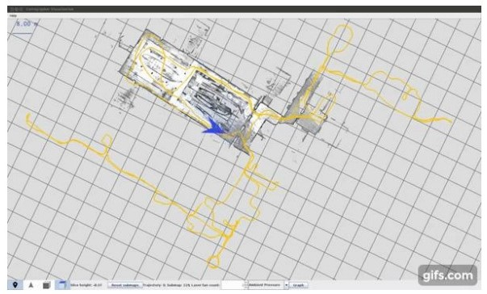
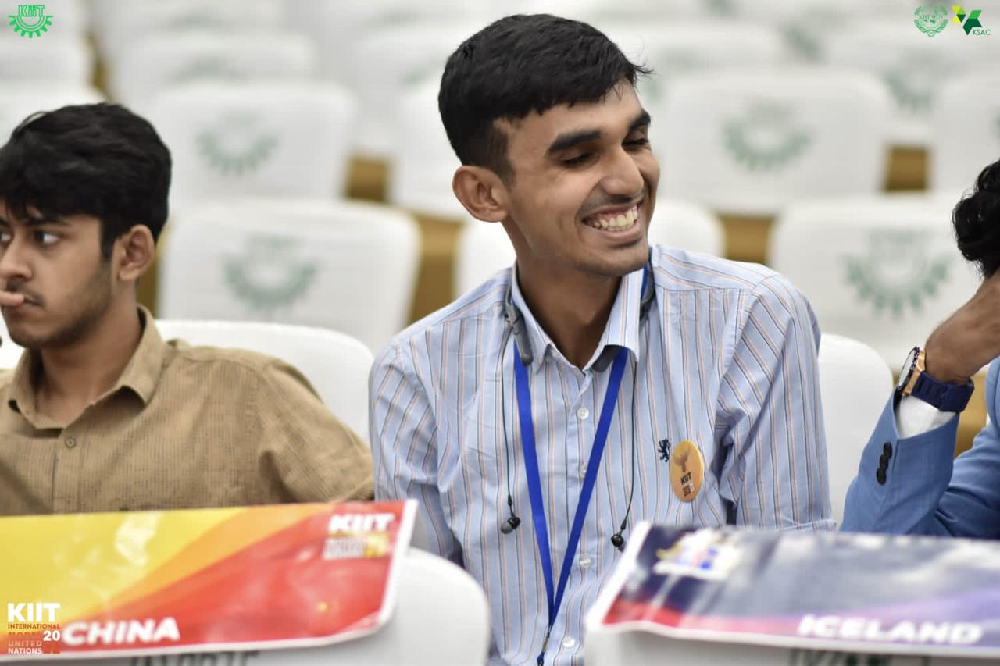

I am an AI-ML researcher and applied physicist who dreams of advancing science and technology by creating
innovative solutions in material science, blockchain, signal processing, and predictive finance analytics.
Physics-Driven Data Scientist with Expertise in AI and Computational Modeling
I am Samarjeet Malik, a Computer Science and Engineering student with a strong focus on data science and
applied physics. My experience includes groundbreaking work at BARC and DRDO, where I developed
AI-powered models for predictive sensing and advanced computational frameworks for robotics and material
analysis. With expertise in Physics-Informed Neural Networks and high-performance data modeling, I have
consistently delivered impactful results, such as achieving over 98% accuracy in subsurface imaging and
sensor predictions. My passion lies in merging physics principles with AI to solve complex real-world
challenges, and I am eager to bring this approach to your team.
National Institute for Transforming India - NITI Aayog
Policy Research and Analysis: Assisted international dignitaries, IAS, and IRS
in conducting policy
research and analysis for 3+ national projects, providing insights on strategic decision-making
processes.
Data Analysis and Report Development: Developed analytical reports and
performed data analysis on
multivariate datasets, focusing on strategic planning under the verticals of Economics, Finance
Disinvestment, Trade Commerce, and G-20.
Policy-Based Solutions: Contributed to 3+ researched reports on policy
solutions for topics such as
economic development, foreign policy, multilateral cooperation, and international summits like
BRICS.
Working with an independent Indian think tank fostering a distinct Indian
perspective on global affairs.
Conducting in-depth research on a variety of international themes, analyzing
data, and crafting insightful reports that contribute to informed public discourse.
Impacting over 1 million+ individuals monthly through its platforms, which
feature opinion pieces.
Graphene Transformation Modeling for Predictive Sensing: Developed using PINNs
and optimized for
performance by transitioning COMSOL simulations from CPU to GPU, solving 200+ high-dimensional
PDEs. Applied the Beer-Lambert Law and Monte Carlo simulations for precise validation of chemical
profiles (Density ± Density, Thermal ± Thermal).
Chemical Property Prediction: Integrated AGI-inspired frameworks for adaptive
learning, constructing
composite equations to model 5+ critical parameters, thereby enhancing resistance-based cancer
sensor
predictions with an FID score of 0.75.
Performance Metrics: Achieved 98.7% accuracy, 97.8% F1 score, and mAP of 0.93,
with precision rates
exceeding 97.5%, validated across 10,000+ data points through extensive hyperparameter tuning.
Defence Research and Development Organization (DRDO)
Daksh Robot Project: Integrated GPR and thermal detection in DRDO’s Daksh
robot to address plastic
lines and low metallic mines through advanced AI and machine learning techniques.
AI Subsurface Imaging: Developed a 15-layer DCNN for subsurface imaging,
achieving a +22.301%
performance increase; implemented GANs (FID 0.8), transfer learning, and ensemble learning (3
models) for geophysical anomaly detection (97.179% accuracy).
◦ Deep Learning Landmine Detection Pipeline: Designed a 10-layer CNN leveraging
GPR and thermal
image fusion, employing data augmentation and a Siamese network with triplet loss, achieving
98.743%
accuracy, 95.112% F1 score, and mean Average Precision (mAP) of 0.92.
My projects focus on leveraging AI and physics to solve complex challenges. I’ve optimized Physics-Informed
Neural Networks for differential equations, developed high-accuracy subsurface imaging models, and enhanced
predictive analytics for cancer detection sensors. Using tools like TensorFlow and PyTorch, I’ve delivered
impactful results in computational modeling and real-world applications.

Real-Time Mapping System
In this project, I developed a real-time SLAM system with cross-platform compatibility and
integrated multiple sensors. I optimized the system for real-time performance, ensuring accurate
localization and mapping. By combining sensor fusion and performance improvements, I created a
scalable solution that enhances navigation and sets the foundation for future advancements.
In this project, I implemented an unsupervised deep neural network architecture and developed a
volume generation prototype system. I engineered a temporal transport mechanism and introduced a
hybrid loss system combining image-based and adversarial approaches. A major achievement was
achieving stable long-term sequence estimation for complex phenomena, like smoke plumes.
Tech Stack: C++ 53.8% Python 42.3% C 3.6% CMake 0.3%
In this project, I developed a video-to-3D reconstruction pipeline, enabling detailed 3D modeling
from video sequences. Key contributions included a collision parameter extraction system, a
collision authoring framework for realistic simulations, and a validation framework for ensuring
accuracy. The solution integrates computer vision, physics simulation, and 3D reconstruction
seamlessly.
In this project, I implemented a diffusion model-based solution for inverse physics problems,
developing a backward time evolution system for accurate tracing. I combined an approximate
simulator with a learned correction mechanism, introduced a score-matching training objective, and
built a posterior sampling system, achieving high accuracy and temporal stability.
In this project, I developed a transformer-based 3D shape completion system using a vector-quantized
deep implicit function (VQDIF) to encode 3D shapes. I designed a transformer for point cloud
processing, integrated multiscale processing for detail handling, and implemented a distribution
sampling system to address uncertainty, ensuring robust and accurate completions.
In this project, I implemented a CNN-based system, VolSiM, for assessing similarity in volumetric
simulations. I developed an entropy-based similarity model, correlation-based loss functions, and a
multiscale CNN architecture to handle volumetric data complexities. The system is robust to rotation
and scale, ensuring accurate comparisons even in dynamic turbulence scenarios.
Tech Stack: Python
87.7%
C++
10.8%
Shell
1.1%
Dockerfile
0.4%
In this project, I developed a system for training 3D diffusion models using 2D images with the
Co3Dv2 dataset. I implemented a preprocessing pipeline, configurable hyperparameters for
optimization, and a Visdom-based training visualization system. Advanced sampling techniques enabled
accurate 3D reconstruction and progressive animation generation, ensuring dynamic, high-quality
results.
In this project, I developed a system to generate 3D animal models from video sequences, using CSE
map extraction for accurate 3D data conversion. I implemented a scene optimization framework for
handling complex inputs, integrated VGGSfM and Segment-Anything for precise segmentation and feature
matching, and created a visualization system for rendering results.
In this project, I developed a diffusion-based flow prediction system for simulating fluid dynamics
in turbulent environments. I implemented denoising diffusion probabilistic models (DDPMs),
integrated uncertainty estimation, and created a distribution sampling system for diverse
predictions. Additionally, I built a comparison framework against Bayesian neural networks and
designed evaluation metrics to analyze performance effectively.
In this project, I implemented conflict-free training methods for Physics-Informed Neural Networks
(PINNs) to improve accuracy and efficiency in point cloud processing. I developed a system to manage
multiple loss terms, a conflict resolution mechanism for competing gradients, and a shared minimum
finding algorithm to optimize convergence. The framework supports multi-task learning and provides
robust validation, advancing neural network applications in 3D modeling, robotics, and spatial
analysis.
Tech Stack: C++
62.3%
C
24.2%
Python
10.2%
CMake
1.9%
Cuda
1.3%
Makefile
0.1%
In this project, I developed a hybrid neural network-PDE solver for reactive flows, combining deep
learning with physics-based modeling. I created a synthetic data generation system, built a flame
evolution prediction model, and integrated PhiFlow for enhanced fluid dynamics simulations,
improving the modeling of combustion and high-temperature fluid dynamics.
In this project, I developed a data-driven weather forecasting system using CNNs for improved
prediction accuracy. I built a data processing pipeline for handling ERA5 climate data, implemented
regridding for precise model training, and created an evaluation framework to assess forecast
performance. The system integrates multiple weather variables for enhanced predictions.
In this project, I implemented the LE-PDE method to accelerate PDE simulations, improving speed and
scalability for complex problems. I developed a fast simulation system, integrated inverse
optimization for parameter tuning, and created a validation framework to ensure accuracy. The system
was applied across domains like fluid dynamics, material science, and heat transfer.
Mine Detection through Sub-surface imaging using Al-ML
While working with the Centre for Artificial Intelligence & Robotics, DRDO, I developed a machine
learning model with 97.89% accuracy, minimizing false positives. I tackled challenges like plastic
and dummy mines, clutter from tree roots, and variable soil conditions, ensuring impeccable
classification despite moisture, mineral content, or weather variations.
Quantum Cryptographic Encryption for P2P Robot Communication
At the Centre for Artificial Intelligence & Robotics, DRDO, I secured P2P communication for robots
like DAKSH and NETRA using SHA-256, SHA-3, and other algorithms. I employed advanced encryption
techniques like RSA, ECC, and Blowfish, integrating quantum-safe cryptography with CRYSTALS-Kyber,
Dilithium, Falcon, and SPHINCS+ for robust security.
Skills: Cryptography · Public Key Cryptography · Encryption · Network Security · Robotic Process
Automation (RPA)
Predicting Chronic Kidney Disease using Machine Learning
I conducted research on chronic kidney disease, analyzing clinical parameters to identify key risk
factors. Using Python and TensorFlow, I developed a machine learning model to predict the likelihood
of disease onset based on patients’ medical histories, providing a valuable tool for early detection
and proactive healthcare interventions.
I developed a C project from scratch to perform various image processing operations on PPM images,
including resizing, filtering, and adjusting brightness, contrast, and saturation. Additionally, I
implemented recursive functions to generate fractals such as the Mandelbrot set, Julia set, Koch
curve, Barnsley fern, and Sierpinski triangle in PPM format.
Skills: C (Programming Language) · Image Processing
Smart India Hackathon 2023 finalist and ISRO Antriksh Hackathon
2024 semifinalist.
North Zone captainand National level gold medalist in 110 m
hurdles and 4x100 relay
8 Debate wins in BPD and APD at institutions such as NLU Delhi,
DU, NLU Patna, NIT Rourkela, NLU
Cuttack, NIFT - Winner and Order of Merit
Judo - North Zone and Haryana silver medalist in U-17 and U-19 in
60 kg
MUN victories at DU, IIT, SSU, RU, JU, KIIT - won 9 out of 11
SOF OLYMPIAD - NCO-16-17, 19-20 (148 International Rank) – 1x
Gold Medal, 1x International Zonal
Medal of Excellence
IMO-14-15, 15-16, 20-21 (97 International Rank) – 2x Gold Medal,
1x International Medal of Merit
NSO-15-16 (248 International Rank), 17-18 – 2x Gold Medal, 1x
Zonal Medal of Merit
IEO-16-17 (156 International Rank) – 1x International Medal of
Excellence
Championed a fundraising initiative that raised over 3.45 crore
Indian rupees through corporate
partnerships and influenced more than 23,000 community members on animal welfare issues during
pandemic challenges with WWF.

Publications
Conference Papers
Future trends in cybersecurity and blockchain
Future trends in cybersecurity and blockchain will continue to evolve, adapting to emerging
threats while refining security and decentralization methods.
[J.1] Malik, S., et al. (2024). PINN-based modeling of laser-induced surface changes in Ti-6Al-4V
for
biomedical implants. Computational Physics (Elsevier).
[J.6] Malik, S., et al. (2024). AI-enhanced Wi-Fi sensing
for human motion detection and spatial analytics
with blockchain and federated learning. IEEE IoT.
[J.8] Chowdhury, P., & Malik, S. (2024). AI-ML and
PINN-driven simulation and parameter optimization
of laser-induced graphene sensors for cancer detection. Computational Physics (Elsevier).
[J.9] Singh, S. P., & Malik, S. (2024). Integrating
blockchain hashing and LNN for real-time verification: A
fusion of RFID, biometric authentication, and advanced encryption. IEEE TIFS.
I was a scribe for a partially blind student of grade 12th.I helped him read and wrote his English
Examination for CBSE 12th Boards. His result for the same was 80 out of 80.
President
The Shriram Millennium School
Lead my student body, I had three fundamentals to stand and run by: Discipline, Ethics and Growth. As
the School Representative and Spokesperson, I headed and organized while also anchored events.
Understood that the key to success is the balance between understanding the students and teachers and
parents while remembering the Students are the heartbeat of the school.
Volunteer
KIIT Animal Welfare and Environmental Society
Rescued multiple critically wounded and injured street animals. got them to the veterinary hospital
and got them treated and operated and looked after them till their full recovery.
Also spread awareness and made people aware of the rising environmental concerns and the solutions and
way forward to the same.
Core Team Lead
Kamakshi & HeForShe
Worked and toiled towards effective and realistic Gender Empowerment and upliftment.
Core Team Lead
Kimaya KIIT- the Medical society of KIIT
Raised awareness about pressing medical issues ad problems in the world and tried to get to the
grassroots of them and solve them by head on approach. Organized regular medical camps and did
frequent visits for the same.